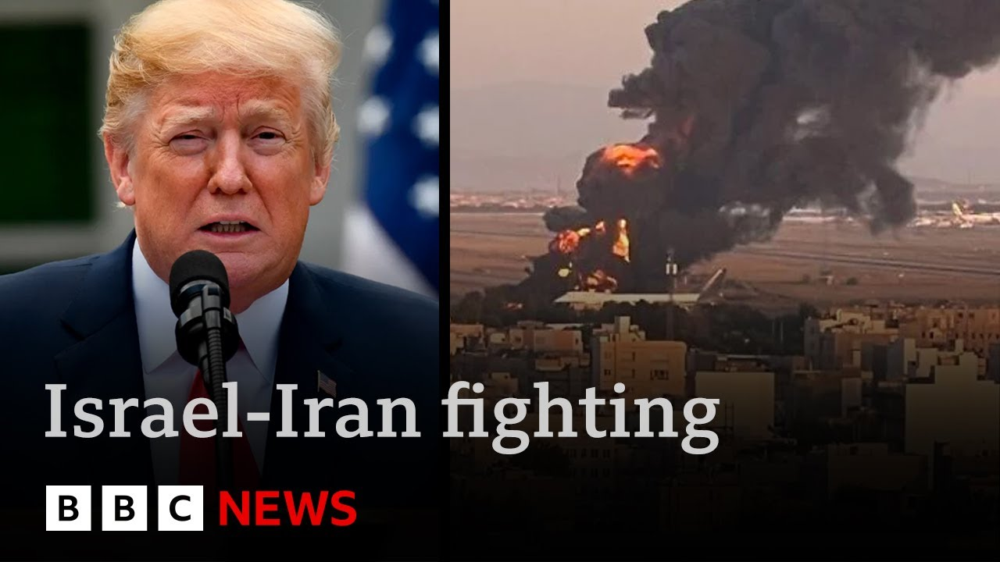

【以伊冲突进入第四天，特朗普总统表示伊朗正在输掉这场战争，并敦促两国立即展开和谈。他在加拿大举行的G7峰会开幕式上发表此番言论，预计该峰会将聚焦此冲突。工党领袖斯塔默强调当前重点是局势降级。今晚我们将带来G7峰会报道及以色列最新动态。伊朗国家电视台数小时前称新一轮对以攻击已开始，其媒体大楼遭以军空袭的画面被直播记录，伊朗谴责此举构成战争罪。BBC虽无法在伊朗境内播报，但BBC波斯语团队持续追踪当地局势。以下是巴哈姆·加比的报道：伊朗国家电视台直播期间遇袭，一名幸存受伤记者担忧同事安危，称不知有多少人被困或伤亡。德黑兰连日遭猛烈轰炸，这是数小时前的画面。许多居民试图逃离，尤其以方警告军事设施周边撤离后，但瘫痪的交通使逃生困难。BBC波斯语无法在伊运作，但通过观众核实的视频得知，有民众因交通堵塞放弃撤离，并自愿留下照看邻居财物。小城镇亦无力接纳大规模流离人口。袭击已波及伊朗各地：西部城市克尔曼沙赫的医院遇袭，伊朗指认以色列所为，人权组织称附近导弹发射器或是真实目标。历史名城伊斯法罕昨日多次遇袭，宗教城市马什哈德机场加油机遭以军打击——距以边境2300公里，创冲突以来最远打击记录。伊朗当局称以方不仅动用战机，还有地面间谍活动，警方突袭德黑兰南部无人机作坊，指控以特工境内组装并用皮卡发射。与以色列不同，伊朗无警报系统和避难所，民众深感陷入非自愿的战争。BBC核实团队通过卫星图像确认以军对伊核设施及军事基地的打击，包括比吉坎纳导弹基地屋顶损毁、伊斯法罕核基地四座关键建筑（含铀转化厂）受损。以总理内塔尼亚胡宣称已取得德黑兰制空权，但昨夜伊朗导弹仍突破防御袭击特拉维夫等地。中东记者露西·威廉姆森报道：以方称开战是为消除伊朗弹道导弹威胁，但昨晚多枚导弹突破防御，其中一枚击中特拉维夫市中心。酒吧店主维多利亚在距落点数米处经营25年，她惊恐中呼吁以军持续攻击"彻底终结冲突"。以总理今日表彰空军摧毁伊朗三分之一导弹发射器，称"已控制德黑兰上空，正同时实现消除核威胁与导弹威胁两大目标"。但专家认为以方仅能延缓伊朗核计划数周，彻底阻止需发动全面战争推翻政权。随着伤亡增加，以民众仍坚定支持战争，但以军对德黑兰的猛攻尚无明确终局方案。G7峰会原非为讨论中东冲突而设，却成为核心议题。北美编辑莎拉·史密斯报道：特朗普称相信伊朗愿达成协议，但回避美军介入可能性。七国一致反对伊朗拥核，但除此外将重点讨论降级冲突。加拿大总理特鲁多认为伊朗应把握和谈时机，斯塔默则希望借机敲定英美贸易协定，但首要关切仍是冲突扩散风险。七国恐难达成传统联合公报，仅有望签署呼吁降级的共同声明——美官员透露总统无意签署现有草案。莎拉·史密斯于加拿大班夫报道。】
Summary: The conflict between Israel and Iran is ending its fourth day now.
摘要： 以伊冲突现已进入第四天。

⏱️ Estimated Reading Time: 13 min
📚 六级生词 📚 雅思生词 📚 托福生词 📚 专八生词 📚 SAT生词 📚 考研生词 📚 GRE生词 📚 高考生词
And President Donald Trump has said that Iran is losing this war.
特朗普总统表示伊朗正在输掉这场战争。
He has urged the two nations to start peace talks immediately.
他敦促两国立即展开和平谈判。
He was speaking a little earlier at the start of that G7 summit in Canada that you've just been hearing about.
他稍早前在加拿大举行的G7峰会开幕式上发表讲话。
It is set to be dominated by this conflict.
预计该峰会将聚焦此冲突。
And Saky Starmmer, who as you know is attending, said that the focus here now was on deescalation.
与会者斯塔默表示当前重点是局势降级。
Well, tonight we'll have a report from the G7 summit as well as the latest from here in Israel.
今晚我们将带来G7峰会报道及以色列最新动态。
And in the last few hours, Iranian state TV reported that a new wave of attacks on Israel was beginning.
数小时前伊朗国家电视台称新一轮对以攻击已开始。
In Iran, Israeli air strikes on the state media complex was captured on live TV.
以军空袭伊朗国家媒体大楼的画面被直播记录。
Iran condemned that attack as a war crime.
伊朗谴责此举构成战争罪。
While the BBC is not allowed to broadcast from inside Iran, but our colleagues at BBC Persian have been keeping across the developing situation there.
BBC虽无法在伊朗境内播报，但BBC波斯语团队持续追踪当地局势。
Baham Gabi has this report.
以下是巴哈姆·加比的报道。
Iranian state TV came under attack during a live broadcast.
伊朗国家电视台直播期间遇袭。
An injured reporter who survived is now worried about the fate of others.
一名幸存受伤记者担忧同事安危。
I don't know how many of my colleagues were inside the building or how many have been martyed or wounded.
不知有多少同事被困或伤亡。
Iran's capital has been under heavy bombardment in recent days.
德黑兰连日遭猛烈轰炸。
This is Tehran only a few hours ago.
这是数小时前的德黑兰。
Many residents have tried to flee, especially after Israel asked people to evacuate areas near military facilities.
许多居民试图逃离，尤其以方警告军事设施周边撤离后。
But for many, escaping has proven impossible due to paralyzing traffic.
但瘫痪的交通使逃生困难。
BBC Persian cannot operate in Iran, but our audience sends us videos and messages that we verify.
BBC波斯语无法在伊运作，但通过观众核实的视频得知。
One of them told us why he stayed behind.
有民众解释留下原因。
I gave up because of the heavy traffic.
因交通堵塞放弃撤离。
On the other hand, our entire building has been evacuated and someone needs to stay behind to look after the neighbors belongings.
整栋楼已疏散，需有人留下照看邻居财物。
Besides, smaller towns don't have the capacity to accommodate such a large population.
小城镇无力接纳大规模流离人口。
But it's not just Thran.
袭击不仅限于德黑兰。
Strikes are hitting almost every corner of Iran.
几乎波及伊朗各地。
This is a hospital in the western city of Kman Shaw.
这是西部城市克尔曼沙赫的医院。
Iran says Israel was behind the strike.
伊朗指认以色列所为。
A human rights group and local sources say a missile launcher was deployed nearby and it may have been the real target.
人权组织称附近导弹发射器或是真实目标。
Either way, this is the reality of war.
无论如何，这是战争现实。
Civilians paying the highest price.
平民付出最高代价。
The historic city of Esvahan was struck multiple times yesterday.
历史名城伊斯法罕昨日多次遇袭。
And in the religious city of Mashad, the Israeli military says it hit refueling aircraft at the airport.
宗教城市马什哈德机场加油机遭以军打击。
some 2,300 kilometers from its borders.
距以边境2300公里。
The longest range Israeli strike since the beginning of the conflict.
创冲突以来最远打击记录。
Authorities in Iran say it's not only the fighter jets.
伊朗当局称以方不仅动用战机。
Israel has also boots on the ground.
还有地面间谍活动。
The most significant blows by the enemy are carried out by local spies.
敌方最致命打击由本地间谍实施。
Iranian police say they've raided a drone workshop in southern Thrron.
警方突袭德黑兰南部无人机作坊。
They say Israeli agents assemble drones inside the country and then load them onto pickup trucks to launch them from there.
指控以特工境内组装并用皮卡发射。
Unlike in Israel, Iranians say there are no sirens and no shelters.
与以色列不同，伊朗无警报系统和避难所。
Many feel they are trapped in a war they never chose after decades of repression.
民众深感陷入非自愿的战争。
Paramodi, BBC News.
帕拉莫迪，BBC新闻。
Well, BBC Verify has been using satellite imagery to confirm those Israeli attacks inside Iran on nuclear and military sites.
BBC核实团队通过卫星图像确认以军对伊核设施及军事基地的打击。
Here are some of the locations where strikes have been carried out just in the last few days.
以下是近日遭袭地点。
Now, this is a missile base in Big Canna.
这是比吉坎纳导弹基地。
If you compare it with an older image, this satellite image that was taken yesterday clearly shows damage to the roof.
对比旧图可见昨日卫星图像显示屋顶损毁。
And Isvahan is one of Iran's key nuclear sites.
伊斯法罕是伊朗关键核基地。
It was confirmed over the weekend that four critical buildings at this site were damaged, including the uranium conversion facility.
周末确认该基地四座关键建筑（含铀转化厂）受损。
And on this satellite image, you can now see visible damage to the buildings there.
卫星图像显示建筑明显损毁。
Well, here in Israel, Prime Minister Benjamin Netanyahu said his country is on the way to achieving victory, claiming that it has full aerial control over Thran.
以总理内塔尼亚胡宣称已取得德黑兰制空权。
Overnight, Iranian missiles penetrated Israel's air defenses in attacks on Tel Aviv, Hifur, and other cities.
昨夜伊朗导弹突破防御袭击特拉维夫等地。
Our Middle East correspondent, Lucy Williamson, has the latest from Tel Aviv.
中东记者露西·威廉姆森带来特拉维夫最新消息。
Israel started this war to make Israelis safer, it said, seeing Iran's ballistic missiles as a separate existential threat.
以方称开战是为消除伊朗弹道导弹威胁。
Last night, several slipped again through Israel's defenses, one landing right in the heart of Tel Aviv.
昨晚多枚导弹突破防御，其中一枚击中特拉维夫市中心。
The speed of Israel's offensive in Iran is fueled by the knowledge that this is what happens when a single missile lands.
以军猛攻因深知单枚导弹的破坏力。
The bar Victoria opened here 25 years ago was a few meters from the impact site.
维多利亚25年前开的酒吧距落点数米。
Still in shock, she told me Israel needed to keep up its attacks.
她惊恐中呼吁以军持续攻击。
"We need to finish this so it's final," she said, "and not postpone it again for another few years."
"需彻底终结冲突而非再拖延数年"。
"Are you scared?" I asked her, "Yes, very."
"你害怕吗？""非常害怕"。
At an air base today, Israel's prime minister praised their achievements.
以总理今日在空军基地表彰战果。
The military said it had destroyed a third of Iran's missile launchers.
军方称已摧毁伊朗三分之一导弹发射器。
The Israeli air force is in control of the skies of Tehran.
以空军已控制德黑兰上空。
This is a change in the entire campaign.
这是整个战役的转折。
We are on the way to achieving both of our goals, the prevention of nuclear threat and the missile threat.
正同时实现消除核威胁与导弹威胁两大目标。
But how much damage can Israel do to Iran's nuclear program?
但以方能对伊朗核计划造成多大破坏？
Some of it buried deep underground in secret sites.
部分设施深藏地下。
We cannot delay it by more than two or three weeks.
仅能延缓两三周。
And to the best of my judgment, even the Americans cannot delay it for more than few months.
美军至多拖延数月。
And that's a sensitive issue.
这是敏感问题。
It means that if there is a a a determined a serious intention to block Iran from turning into military nuclear power, the only way is to announce a fullscale war on the regime itself and carry it on until they are toppled down.
彻底阻止需发动全面战争推翻政权。
Many Israelis remain firmly behind this war as casualties here begin to mount.
随着伤亡增加，以民众仍坚定支持战争。
Israel's army is now pushing hard on Iran's capital city without any sign of a clear end or exit plan.
以军正猛攻德黑兰且无明确终局方案。
Lucy Williamson, BBC News, Tel Aviv.
露西·威廉姆森，BBC新闻，特拉维夫。
The conflict here in the Middle East looks to be top of the agenda for G7 leaders at their 3-day summit in Canada.
中东冲突成为加拿大G7峰会首要议题。
Our North America editor Sarah Smith is at the summit.
北美编辑莎拉·史密斯现场报道。
Sarah, yeah, it was not the plan that the world's seven most economically advanced democracies would all gather here in Canada to talk about the conflict in the Middle East.
七国原非为讨论中东冲突而聚。
But that is absolutely what will dominate this summit.
但这确成峰会核心。
And we heard from Donald Trump just a few minutes ago who seems reasonably confident of some kind of resolution.
特朗普数分钟前似对达成协议有信心。
He says, "I think there will be a deal. Iran wants to make a deal," he said.
"伊朗愿达成协议"。
and he has been dismissing questions he's been asked about what it would take for the US to get militarily involved in this conflict, saying that's not something he wants to talk about.
他回避美军介入可能性。
And there is one thing that every one of the countries meeting here really does agree on, and that is that Iran should not be allowed to develop nuclear weapons.
七国一致反对伊朗拥核。
Beyond that, they'll be talking about how to try and deescalate this conflict over the next couple of days.
此外将讨论冲突降级。
The majestic Canadian Rockies are in every sense a very long way from the Middle East.
加拿大落基山距中东遥远。
It's beautiful. I know.
风景虽美——
But for the world leaders assembling here, it is the Iran Israel conflict that will dominate their Alpine get together.
但领导人聚焦以伊冲突。
While each one of them has specific issues to raise with Donald Trump, they all want him to try to calm tensions in the Middle East.
均希望特朗普缓和中东局势。
Happy birthday.
生日快乐。
alongside the Canadian Prime Minister Mark Carney.
加拿大总理特鲁多称。
He said he believes Iran is ready to talk about deescalating the fighting.
相信伊朗愿讨论降级冲突。
It's painful for both parties, but I'd say Iran is not winning this war and they should talk and they should talk immediately before it's too late.
伊朗未赢且应把握和谈时机。
Before getting down to business, Kier Starmer grabbed the chance for a quick chat with Donald Trump while the French and Italian leaders whispered, "What could they have been talking about here?
斯塔默借机与特朗普密谈引发揣测。
Sir Thmer hopes to finalize the details of the UK US trade deal, the only one America has agreed so far, but he says the number one issue is the fear of the Middle East conflict expanding.
他希望敲定英美贸易协定，但首要关切是冲突扩散。
But we have to find a way uh to deescalate this situation.
必须找到降级途径。
Notwithstanding the concerns that we all have about the nuclear program.
尽管担忧核计划。
There's no doubt about that.
这点毋庸置疑。
Notwithstanding, we all accept Israel's right to self-defense, of course.
当然承认以色列自卫权。
Uh but there must be de deescalation and that that will be the central focus of much of the discussion today.
但降级是今日讨论核心。
When Donald Trump first came to power, he muscled his way through international summits without diplomacy.
特朗普初执政时惯用强硬手段。
At the last G7 meeting in Canada 7 years ago, he provoked confrontation before walking out early.
七年前G7峰会他提前离场。
This time, the other nations must take great care to keep him on side if they hope to reach agreement on anything.
此次各国需谨慎争取其支持。
The Canadian hosts have already abandoned the idea of trying to get all seven countries to sign up to the traditional joint communicate outlining what they all agree on.
加方放弃传统联合公报。
That would be nigh on impossible with Donald Trump here.
因特朗普在场几无可能。
Instead, the best they can hope for is a joint statement urging deescalation in the Middle East that all seven leaders can sign up to control.
仅有望签署降级声明。
Around the table, talks on Israel and Iran will not necessarily produce agreement.
以伊议题未必达成共识。
A statement has already been drafted calling for deescalation and for both sides to protect civilians.
已有呼吁保护平民的声明草案。
But US officials have told the BBC's American partner CBS the president does not intend to sign that.
但美官员称总统无意签署。
Sarah Smith, BBC News, BA, Canada.
莎拉·史密斯，BBC新闻，加拿大班夫。